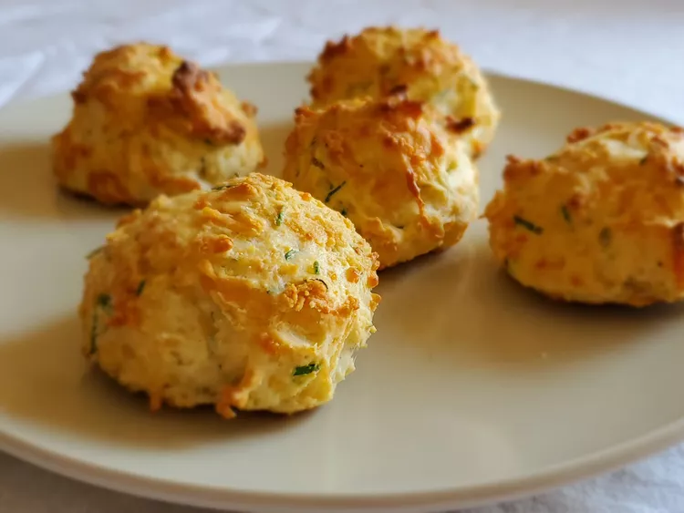

Parmesan Chive Biscuits

Description
These savory Parmesan chive biscuits can go with nearly any dinner main,
or will be a superb addition to the brunch buffet.
Ingredients
- 1 cup all-purpose flour
- 1/2 cup packed shredded Parmesan cheese
- 2 tablespoons thinly sliced chives
- 1 teaspoon baking powder
- 1/2 teaspoon salt
- 1/4 teaspoon baking soda
- 1/4 teaspoon freshing ground black pepper
- 1/3 cup cold sour cream
- 1/4 cup plus 1 tablespoon cold milk
- 2 tablespoons unsalted butter, melted, for brushing onto biscuits
Directions
- Preheat the oven to 400 degrees F (200 degrees C).
Line a baking sheet with parchment paper.
- In a bowl, whisk together flour, Parmesan, chives, baking powder,
salt, baking soda, and pepper.
- Stir in sour cream until the mixture resembles coarse grains.
Add milk and fold until it just comes together. Scoop the batter
by the 1/4 cup using a cookie scoop or an ice cream scoop onto
the prepared baking sheet, 1 inch apart.
- Bake in the preheated oven for 15 minutes. Remove and brush with melted butter.
Bake until golden brown, 5 to 7 minutes more.
Nutrition
- 170 Calories
- 9g Fat
- 18g Carbs
- 5g Protein